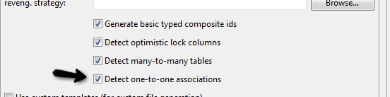

|
Reverse engineering now detects one-to-one associations via primary key and both hbm.xml and annotation generation generates the proper code for it.
The detection is enabled by default (except for Seam 1.2 and Seam 2.0) reverse engineering. For Hibernate Tools generation there is a checkbox to disable if not wanted.

|